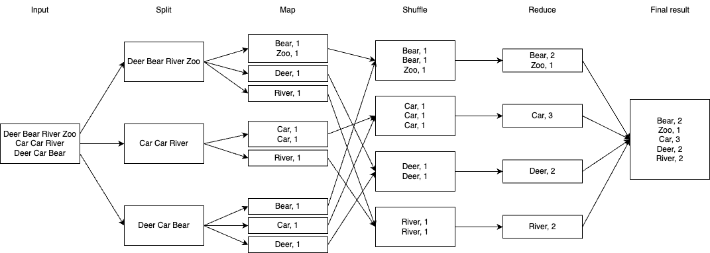
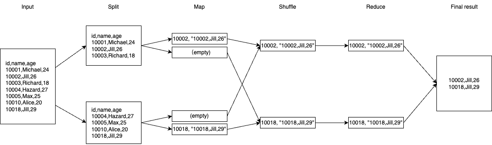
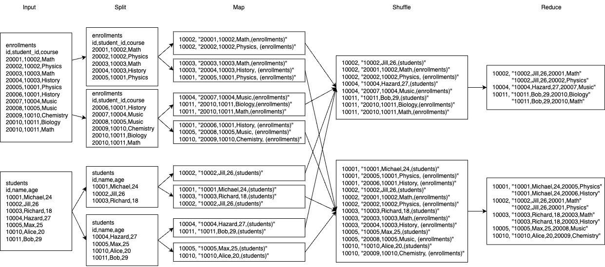

从 MapReduce 到 SQL
在最近的工作中，为了做数据分析，我开始写一些复杂的 HiveSQL。每次执行 HiveSQL 时，都会看到 Map/Reduce jobs 被调度、执行，直到最后展示出数据。渐渐地我心中多了两个疑问：
-
MapReduce 引擎如何工作？
-
SQL 是如何被翻译成 MapReduce job 的？
为了解决这两个疑问，我用比较熟悉的 Go 语言实现了一个玩具版本的 MapReduce 引擎，然后基于此实现基本的 select，join。
本文相关的源码放在仓库 ZhengHe-MD/pset · GitHub 中，欢迎查阅。
1. MapReduce 的基本过程
如果你读过 Google 的这篇论文 MapReduce: Simplified Data Processing on Large Clusters，可以直接跳过本节。如果你没读过或者有些遗忘，则不妨往下看。
MapReduce job 的一般执行过程如下图所示：

注：图中每个方块代表一个文件
-
输入数据是一个巨大的文件，需要先把它切分成若干子文件；
-
Map 过程将单个子文件中的原始数据转化成一组键值对。键值对中键值的含义由开发者定义。每个子文件产生的键值对会按照对应的键散列到若干个临时文件中，在下文中我将称这些临时文件为 mapped file。键的散列值 (
hash(key)) 相同的数据会被写入同一个临时文件； -
Reduce 过程先读取对应散列值的临时文件，根据需要重排里边的键值对，最后依照目标聚合数据；
-
Reduce 产出的文件，既可以被用作另一个 MapReduce job 的输入子文件，即第 1 步的输出结果，也可以被直接合并成结果文件输出。
以图中的「词频计算」为例，Map 过程读取文件中的每一个词，生成键为词语、值为常数 1 的键值对，如 "Deer, 1"、"Car, 1"。键散列值相同的数据会被散列到相同的临时文件中，交给对应的 Reduce 过程。Reduce 过程获取散列值相同的键值对后，先做一次排序，使键相同的数据物理上相邻，如图中的 3 个 "Car, 1"，然后直接加总计数值即可得到 "Car, 3"，即单词 "Car" 出现 3 次。合并所有输出文件就得到了所有词语的频度统计结果。
从性能上看，Map 和 Reduce 的执行实例可以依据 job 的大小自由扩展，使得 Map 阶段和 Reduce 阶段各自可以横向扩容计算能力。另外，整个过程中的发生的数据读写形式只有顺序 I/O，能充分满足大数据对吞吐的需求。
2. 实现一个玩具版 MapReduce 引擎
💡 What I cannot create, I do not understand.
在进入正文之前，我首先声明：这个引擎并不是我从无到有造出来的。在开干之前，我想起 4 年前做过的 MIT-6.824 作业中第一个 lab 就是 MapReduce。于是我先通读了一遍课程设计者提供的源码，随后才撸起袖子开干，这个过程肯定会有一些参考和借鉴。
2.1 领域实体 (Entities)
MapReduce 引擎需要能接收用户提交的任务，并将它拆解成多个小的计算 (map/reduce) 子任务，分发到计算节点上执行，过程如下图所示：

这里至少涉及 5 个实体：Cluster、Master、Worker、Job 和 Task。Cluster 负责管理集群的元信息、启动和关闭；master 节点负责 worker 节点的注册、发现，接收用户提交的 job，拆解成子任务 task，分发给 worker 节点执行。由于 map 与 reduce 子任务在元数据和执行过程并不相同，为了源码的可读性和可维护性，Task 又被进一步拆分成 MapTask 与 ReduceTask 两个子类。
备注：为了表述清晰，下文中会将执行 map task 的 worker 称为 mapper，执行 reduce task 的 worker 称为 reducer。
2.2 领域过程 (Interfaces)
谈到 MapReduce 引擎的领域过程，自然少不了 map 和 reduce。此外，数据在计算子任务之间是以文件的形式共享，因此数据的编解码也是引擎里重要的过程。
mapper 将输入数据按计算目标解析成键值对：
// Mapper is the interface that wraps the basic Map method.
type Mapper interface {
Map(data []byte) ([]KeyValue, error)
}
reducer 将键相同的键值对聚合，由于输出的键与输入相同，在返回值中只需要给出计算结果即可：
// Reducer is the interface that wraps the basic Reduce method.
type Reducer interface {
Reduce(key string, values []string) (string, error)
}
由于每个计算任务的 map 和 reduce 过程本就是为了完成某个特定的计算目标，二者的逻辑有很密切的联系，因此工程师一般会对二者同时设计、编码和测试。于是在这里额外定义一个 MapReducer，方便开发者管理 mapper 和 reducer 的逻辑。
// MapReducer is the interface that groups the basic Map and Reduce methods.
type MapReducer interface {
Mapper
Reducer
}
Encoder 和 Decoder 定义数据的编解码过程：
// Encoder is the interface that wraps the basic Encode method.
type Encoder interface {
Encode(v any) error
}
// Decoder is the interface that wraps the basic Decode method.
type Decoder interface {
Decode(v any) error
}
尽管在实现过程中使用的是标准库中的 json.Encoder 和 json.Decoder，但这里很有必要将这两个过程提炼出来，强调它的重要性。
2.3 业务规则 (Business Rules)
2.3.1 一次任务关联的文件
在一次 MapReduce job 执行过程中会涉及多少个不同的文件？假设共有 M 个 map task，R 个 reduce task，我以文件视角画了一张示意图：

一般拆分后的输入子文件会被放在文件系统 (如 HDFS) 的某个目录下。目录中文件的数量即为需要执行的 map task 数量 M。由于在 reduce 阶段，我们需要将键相同的键值对放进同一个 reduce task 中处理，而 map task 的输入文件中可能包含任意键值对，因此每个 map task 在执行时都可能输出到 R 个 mapped file 里，中间文件的总数为 MR。每个 reduce task 会读取散列值相同的所有 mapped file，然后执行排序和 reduce 逻辑，输出到一个 reduced file 里。将所有 reduced files 合并就能得到最终结果文件。
综上所述，一次任务关联的文件总数为 M + MR + R + 1。在我们的计算引擎中，用户在提交任务时，会通过输入文件目录 (InputDir) 所含的文件数量确定 M，通过 Job 中的字段 R 指定 R。
type Job struct {
Id string
InputDir string // the directory where input files reside
OutputDir string // the directory where output files reside
ProcessorName string // the name of a MapReducer defined in mapreducers.go
R int // number of reduce tasks
operation *Operation // job status
}
2.3.2 执行 Map/Reduce Task
引擎中，MapTask 和 ReduceTask 之间有一个隐藏的约定 —— mapped file 的命名规则：
// mappedFile constructs the name of the mapped file which a MapTask
// generates for the corresponding ReduceTask.
func mappedFile(jobId string, mapTask string, reduceTask string) string {
return fmt.Sprintf("mrtmp.%s-%s-%s", jobId, mapTask, reduceTask)
}
每个 mapped file 名字由 job，map task 和 reduce task 三者的标识共同决定。通过这个约定，mapper 和 reducer 都能够利用 M、R 以及 job 信息计算得到所有 mapped files 的地址。
2.3.2.1 MapTask
以下是 map task 的数据结构，其中 InputFile 是输入的子文件。
// MapTask provides all the information needed to run a map task.
type MapTask struct {
Id string
InputFile string // the input file to map phase.
Job *Job
}
执行 map 过程时，需要打开 1 个输入文件和 R 个输出文件，利用开发者自定义的 mapper 将原始数据转化成键值对，然后根据键的哈希值选择数据应被写进的输出文件：
func (mt *MapTask) Do() (err error) {
// 1. 打开输入文件，并读取原始数据
byt, err := ioutil.ReadFile(mt.InputFile)
if err != nil {
return
}
// 2. 将原始数据传给开发者自定义的 Map
kvs, err := mapReducer.Map(byt)
if err != nil {
return
}
// 3. 打开 mapped files
mappedFiles := make([]*os.File, 0, mt.Job.R)
encoders := make([]Encoder, 0, mt.Job.R)
// ...
// 4. 遍历键值对，并利用 encoder 写出到相应的输出文件
var hsh int
for _, kv := range kvs {
if hsh, err = hash(kv.Key); err != nil {
return
}
if err = encoders[hsh%mt.Job.R].Encode(&kv); err != nil {
return
}
}
return
}
2.3.2.2 ReduceTask
以下是 reduce task 的数据结构：
// ReduceTask provides all the information needed to run a reduce task.
type ReduceTask struct {
Id string
M int // number of map tasks
Job *Job
}
执行 reduce 时，需要打开 M 个输入文件和 1 个输出文件，先读取 M 个输入文件中的所有数据，按键排序后，将键相同的数据一组一组地交由开发者定义的 reducer 处理，并将得到的计算结果写进输出文件。在论文中提到过，如果无法在内存中完成所有数据的排序，将使用外部排序算法，本项目为了简单直接忽略了这种情况。
func (rt *ReduceTask) Do() (err error) {
var kvs []KeyValue
// 1. 读取 M 个输入文件中的键值对到 kvs 中
var mf *os.File
for i := 0; i < rt.M; i++ {
mf, err = os.Open(mappedFile(rt.Job.Id, strconv.Itoa(i), rt.Id))
// handle err and close file...
var shard []KeyValue
// decode map file into shard...
kvs = append(kvs, shard...)
}
// 2. 按键排序
sort.Slice(kvs, func(i, j int) bool {
return kvs[i].Key < kvs[j].Key
})
// 3. 将键相同的数据一组一组地传入 Reduce
var rkvs []KeyValue
var k, v string
var vs []string
var i int
for i < len(kvs) {
k, vs = kvs[i].Key, append(vs, kvs[i].Value)
for i+1 < len(kvs) && kvs[i+1].Key == k {
i += 1
vs = append(vs, kvs[i].Value)
}
if v, err = mapReducer.Reduce(k, vs); err != nil {
return
}
rkvs = append(rkvs, KeyValue{Key: k, Value: v})
vs = vs[:0]
i += 1
}
// 4. 将结果写出
// (省略)
}
2.3.3 执行引擎
2.3.3.1 通信协议
MapReduce job 的执行过程中涉及到了进程间通信，本项目使用 go 标准库里的 net/rpc 作为通信协议。MapReduce 集群中有两种节点：Master 和 Worker，Master 负责任务的调度和结果汇总，Worker 负责执行具体的计算过程。
master 中需要存储所有注册节点的地址，即结构体 Master 中的 workers 字段。
// Master is the concrete type for Master node described in the original paper.
type Master struct {
Address string
lsn net.Listener
mu sync.Mutex // protects the following fields.
wi int // index of current worker, used to implement round-robin strategy.
workers []string // registered worker addresses.
clients map[string]*rpc.Client // map worker (address) to it's rpc client.
jobs map[string]*Job // in-memory job store, which maps operation id to job.
shutdown chan struct{}
}
单个 worker 启动后通过 master 暴露的 Register 接口将自己的服务信息注册上去，
// RegisterArgs represents arguments passed when a worker node calls Register.
type RegisterArgs struct {
// the communication endpoint of worker process,
// such as IPC socket or Network socket
Worker string
}
// Register is called when a Worker node wants to register itself to the Master node.
func (m *Master) Register(args *RegisterArgs, _ *struct{}) error {
m.mu.Lock()
defer m.mu.Unlock()
// ignore all sanity checks.
m.workers = append(m.workers, args.Worker)
return nil
}
之后，master 就可以根据用户提交的 job，将对应的 map task 和 reduce task 派发给若干 worker 节点，这里需要使用的是 worker 节点提供的 DoMapTask 和 DoReduceTask 接口。
// DoMapTaskArgs represents arguments passed to Worker.DoMapTask.
type DoMapTaskArgs struct {
MapTask *MapTask
}
// DoMapTask executes the given map task synchronously.
func (w *Worker) DoMapTask(args *DoMapTaskArgs, _ *struct{}) error {
log.Printf("worker %s start doing map task %s\n", w.address, args.MapTask.Id)
return args.MapTask.Do()
}
// DoReduceTaskArgs represents arguments passed to Worker.DoReduceTask.
type DoReduceTaskArgs struct {
ReduceTask *ReduceTask
}
// DoReduceTask executes the given reduce task synchronously.
func (w *Worker) DoReduceTask(args *DoReduceTaskArgs, _ *struct{}) error {
log.Printf("worker %s start doing reduce task %s\n", w.address, args.ReduceTask.Id)
return args.ReduceTask.Do()
}
2.3.3.2 顺序引擎
顺序执行引擎只用一个 worker 来执行所有的 map/reduce task，其本身的存在意义并不大，主要用于验证概念，确认核心流程的正确性。实现顺序引擎后再实现分布式引擎就会更胸有成竹一些。
忽略异常处理逻辑，顺序引擎的大体执行过程如下：
// sequential runs the map/reduce job sequentially on an arbitrary Worker node.
func (m *Master) sequential(args *SubmitArgs, operation *Operation) (err error) {
job := args.Job
files, _ := ioutil.ReadDir(job.InputDir)
client, _ := m.getClient()
// map phase
for i, file := range files {
doTaskArgs := &DoMapTaskArgs{
MapTask: &MapTask{
Id: strconv.Itoa(i),
InputFile: path.Join(job.InputDir, file.Name()),
Job: job,
},
}
_ = client.Call("Worker.DoMapTask", doTaskArgs, nil)
}
// reduce phase
for i := 0; i < job.R; i++ {
doTaskArgs := &DoReduceTaskArgs{
ReduceTask: &ReduceTask{
Id: strconv.Itoa(i),
Job: job,
M: len(files),
},
}
_ = client.Call("Worker.DoReduceTask", doTaskArgs, nil)
}
// remove temporary files...
return
}
2.3.3.3 分布式引擎
与顺序引擎不同，分布式引擎会将所有 map/reduce task 分发给当前可用的多个 worker，实现计算的横向扩容。核心逻辑与顺序引擎大体相同，只是会额外使用 sync.WaitGroup 在 Map 阶段和 Reduce 阶段分别实现计算逻辑的 fan-out 和 fan-in。Map 阶段实现片段如下：
// distributed runs the map/reduce job on available Worker nodes in a distributed manner.
func (m *Master) distributed(args *SubmitArgs, operation *Operation) (err error) {
// ...
// map phase
var mwg sync.WaitGroup
mwg.Add(len(files))
var client *rpc.Client
for i, file := range files {
doTaskArgs := &DoMapTaskArgs{
MapTask: &MapTask{
Id: strconv.Itoa(i),
InputFile: path.Join(job.InputDir, file.Name()),
Job: job,
},
}
client, _ = m.getClient()
go func() {
rpcErr := client.Call("Worker.DoMapTask", doTaskArgs, nil)
if rpcErr != nil {
operation.Error = rpcErr
}
mwg.Done()
}()
}
mwg.Wait()
log.Println("MapTask phase done.")
// ...
}
2.4 API
对用户而言，MapReduce 引擎只需要暴露提交计算任务的接口即可。对于不同的计算任务，所消耗的时间可从分钟级、小时级到天级甚至更长的时间，同步的接口并不是一个好的选择。这里借鉴了 googleapis 中的 Long Running Operations API，用户通过 SubmitJob 接口提交 MapReduce job，然后得到一个 Operation 结构，表示一个正在执行的任务：
// SubmitArgs represents arguments passed when a client calls SubmitJob.
type SubmitArgs struct {
Job *Job // description of the job to submit
Distributed bool // indicates whether the job should be scheduled distributively
}
// Operation is the reply from Master node when a client calls SubmitJob.
type Operation struct {
Id string
Done bool
Error error
}
// SubmitJob is called when a client wants to submit a new job to Master node.
func (m *Master) SubmitJob(args *SubmitArgs, operation *Operation) error {
// ...
}
用户可以利用 operation 信息和 GetOperation 接口随时查询任务的执行状态：
// GetOperationArgs represents arguments passed when a client calls GetOperation.
type GetOperationArgs struct {
Id string
}
// GetOperation requests the operation status of a map/reduce job.
func (m *Master) GetOperation(args *GetOperationArgs, operation *Operation) error {
// ...
}
2.5 Demo
在 Go 运行时中动态加载用户自定义的函数并不是一件很容易的事，由于这部分功能并非本项目的主要关注点，本项目直接将每个任务对应的 MapReducer 统一定义到项目源码的 mapreducers.go 中。受限于这个选择，这个玩具版 MapReduce 引擎并无法真正支持用户提交任意自定义 MapReduce job。
2.5.1 WordCount
WordCount 即「词频计算」，是 MapReduce 世界的 "hello, world"：
type WordCount struct{}
func (wc WordCount) Map(data []byte) (kvs []KeyValue, err error) {
for _, byt := range bytes.Fields(data) {
kvs = append(kvs, KeyValue{
Key: string(byt),
Value: "1",
})
}
return
}
func (wc WordCount) Reduce(key string, values []string) (string, error) {
return strconv.Itoa(len(values)), nil
}
WordCount 的 mapper 只需要将文本分词后输出 "[word], 1"。reducer 执行时，任意一个词，如 "hello" 对应的键值对 "hello, 1" 会被合并，因此这里 Reduce 函数的输入 key 为 "hello"，values 为一个字符串数组 ["1", "1", ..., "1"]，该函数只需返回这个数组的长度即得到单词 "hello" 的出现次数。
以莎士比亚的节选为例，执行测试如下：
t.Run("word count (sequential)", func(t *testing.T) {
operation := new(Operation)
err = client.Call("Master.SubmitJob", &SubmitArgs{
Job: &Job{
InputDir: "./mixtures/wc/input",
OutputDir: "./mixtures/wc/output",
ProcessorName: "wc",
R: 2,
},
Distributed: false,
}, operation)
if err != nil {
t.Fatal(err)
}
_wait(t, client, operation)
})
可以在 ./mixtures/wc/output 文件夹中看到相应的 reduced files，其中一个输出片段如下：
{"Key":"Feed'st","Value":"1"}
{"Key":"From","Value":"1"}
{"Key":"His","Value":"1"}
{"Key":"How","Value":"1"}
{"Key":"Pity","Value":"1"}
{"Key":"Shall","Value":"1"}
{"Key":"This","Value":"1"}
{"Key":"Thou","Value":"1"}
{"Key":"When","Value":"1"}
{"Key":"Will","Value":"1"}
...
克隆仓库 ZhengHe-MD/pset · GitHub，执行对应的测试看看吧？
2.5.2 Average
假设有一个巨大的文件，文件中每行包含一个整数，想要计算这些整数的平均值，要怎么做？求平均值需要两个值：cnt 和 sum。在 Map 阶段我们可以针对每个子文件输出一个或多个 cnt 和 sum，然后在 Reduce 阶段计算 total(sum)/total(cnt) 即可，相关逻辑如下：
type Avg struct{}
func (a Avg) Map(data []byte) (kvs []KeyValue, err error) {
var cnt, sum, num int
for _, byt := range bytes.Fields(data) {
num, err = strconv.Atoi(string(byt))
if err != nil {
return
}
sum += num
cnt += 1
}
kvs = append(kvs,
KeyValue{Key: "sum", Value: strconv.Itoa(sum)},
KeyValue{Key: "cnt", Value: strconv.Itoa(cnt)})
return
}
func (a Avg) Reduce(key string, values []string) (value string, err error) {
var sum, num int
for _, v := range values {
num, err = strconv.Atoi(v)
if err != nil {
return
}
sum += num
}
value = strconv.Itoa(sum)
return
}
由于所有输入子文件的输出键值对都是 {"sum": "xxx", "cnt": "yyy"}，我们只能用同一个 reducer 聚合计算结果，因此 Job.R 设置为 1。
3. SQL to MapReduce Job
3.1 Select
假设有一张大表 students 记录着学生的基本数据，这张表被横向拆分成两张子表，其内容如下：
id,name,age
10001,Michael,24
10002,Jill,26
10003,Richard,18
id,name,age
10004,Hazard,27
10005,Max,25
10010,Alice,20
10018,Jill,29
现在想实现这样一个查询：
SELECT * FROM students WHERE name = "Jill";
应该怎么写这个 mapreducer？用肉眼我们可以直接观察到它的结果应该是：
id,name,age
10002,Jill,26
10018,Jill,29
由于 select 过程只有过滤没有聚合计算，这基本意味着 reduce 阶段可以是一个 no-op。那唯一需要做的就是在 Map 阶段过滤掉不符合条件的数据即可，键值对中的键取行的唯一 id 即可，处理过程示意如下：

具体实现请参考 pset/mapreducers.go at main · ZhengHe-MD/pset · GitHub。
3.2 Join
假设有两张表，students 和 enrollments，分别记录学生信息和他们的选课信息。它们分别被拆分成两张子表：
# students-1.csv
students
id,name,age
10001,Michael,24
10002,Jill,26
10003,Richard,18
# students-2.csv
students
id,name,age
10004,Hazard,27
10005,Max,25
10010,Alice,20
10011,Bob,29
# enrollments-1.csv
enrollments
id,student_id,course
20001,10002,Math
20002,10002,Physics
20003,10003,Math
20004,10003,History
20005,10001,Physics
# enrollments-2.csv
enrollments
id,student_id,course
20006,10001,History
20007,10004,Music
20008,10005,Music
20009,10010,Chemistry
20010,10011,Biology
20010,10011,Math
现在需要实现这样一个查询：
SELECT
enrollments.id,
enrollments.course
students.id,
students.name,
students.age,
FROM enrollments
LEFT JOIN students
ON enrollments.student_id = students.id;
应该怎么写 mapreducer？因为 join 条件是 students.id = enrollments.student_id，一个比较容易想到的思路就是选择被 join 的字段为键值对中的键，然后对同一个键中两表的数据执行 join，前者对应的就是 map 阶段，后者为 reduce 阶段，处理过程示意如下：

具体实现请参考 pset/mapreducers.go at main · ZhengHe-MD/pset · GitHub。
4. 尾声
实现这个玩具引擎，的确让我对 MapReduce 有了比通读论文更深的理解。诚然，这个引擎还有诸多问题，比如：
-
使用本地文件系统使得其只能利用一台机器的多个 CPU，而非多台机器
-
无法支持开发者提交自定义的 MapReducer
-
Select/Join 任务实际上有很多可能的参数组合并未支持
-
...
不过目前的认识暂时够用，希望有一天在生产环境中遇到相关的问题，能有机会进一步探索大数据系统的奥义。